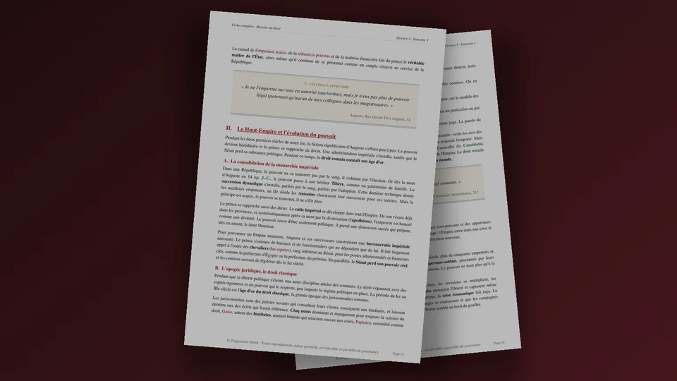

Sujets d'histoire du droit L1, exemples d'examen avec leur correction
En histoire du droit L1, les sujets d'examen prennent trois formes que tu retrouves selon ta faculté. Tu trouves ici quatorze sujets classés par époque, une dissertation corrigée sur la monarchie carolingienne, un commentaire de texte corrigé sur l'ordonnance de Villers-Cotterêts, huit questions de cours et la fiche complète en PDF.


La fiche complète du semestre 1
Histoire du droit L1, la fiche complète de 146 pages
Tout le programme en vingt chapitres, de la royauté romaine à la fin de l'Ancien Régime. Chaque chapitre te donne les institutions, les textes et les auteurs que tu peux citer à l'écrit comme à l'oral.
- Une carte de plan en tête de chaque chapitre
- Les textes, les dates et les auteurs à citer
- Un PDF reçu juste après le paiement
Paiement Stripe · accès à vie · mises à jour incluses · garantie satisfait ou remboursé sous 7 jours
Quels sujets d'examen sont posés en histoire du droit en L1 ?
En histoire du droit, tu étudies comment le pouvoir politique et le droit se sont construits depuis Rome jusqu'à la fin de l'Ancien Régime. Le programme avance par grandes périodes. Tu pars de l'héritage romain. Tu étudies ensuite les royaumes francs et la féodalité, puis la reconstruction de l'État par les rois capétiens, jusqu'à la monarchie absolue.
Les sujets d'examen puisent dans ces périodes, et chaque faculté choisit son format. Tu dois donc regarder dans ta plaquette quel exercice t'attend, puis t'entraîner sur celui-là. Cette page te présente les trois formats classiques et une liste de sujets possibles. Elle te propose ensuite une dissertation et un commentaire de texte corrigés, puis huit questions de cours.
Les trois formats d'examen d'histoire du droit, un par un
1. La dissertation
Tu réponds en deux parties à un sujet court, comme « La relation féodo-vassalique ». Tu définis d'abord chaque mot du sujet, puis tu poses une question qui guide ton plan. Ta copie gagne beaucoup quand tu replaces chaque idée dans son siècle, avec une date et un texte.
2. Le commentaire de texte
On te donne un extrait court, par exemple un article d'ordonnance ou un passage d'un juriste de l'époque. Tu commences par situer le texte, puis tu en dégages les idées directrices, et enfin tu bâtis un plan en deux parties qui suit ces idées. Tu cites les mots du texte pour prouver chacune de tes affirmations.
3. Les questions de cours
Elles te demandent quelques lignes sur une date, une institution ou un auteur. Tu gagnes des points avec la date exacte et le nom du texte, accompagnés de son apport, et une fiche bien organisée te permet de les retrouver vite.
Quels sujets peuvent être posés, époque par époque ?
Le programme couvre un nombre limité de grandes questions. Voici quatorze sujets, rangés dans l'ordre chronologique, avec l'angle qui te permet de bâtir un plan en deux parties.
- « Du Principat au Dominat ». Auguste installe le Principat en 27 avant Jésus-Christ, et Dioclétien transforme le pouvoir impérial à partir de 284. Le plan peut suivre la façon dont l'empereur concentre peu à peu tous les pouvoirs.
- « La loi des XII Tables ». Elle met par écrit un droit dont la connaissance était réservée à une élite de patriciens. Le sujet demande ce que cette mise par écrit change pour les plébéiens.
- « La codification de Justinien ». Le Code, le Digeste et les Institutes sont publiés sous Justinien entre 529 et 534, puis les Novelles s'y ajoutent jusqu'en 565. Tribonien dirige en effet les commissions du Digeste et du Code. Le sujet interroge donc la façon dont ce droit traverse les siècles.
- « La personnalité des lois dans les royaumes barbares ». Chaque sujet est jugé selon la loi de son peuple, par exemple le Bréviaire d'Alaric de 506 pour les Romains du royaume wisigoth. Le plan oppose le principe de personnalité, puis son recul.
- « Le pouvoir royal mérovingien ». Le roi gouverne son royaume comme un patrimoine familial, tout en héritant de pratiques romaines. Tu peux opposer ces deux sources du pouvoir.
- « La monarchie carolingienne ». C'est le sujet corrigé plus bas. Il traverse plus de deux siècles d'histoire, du sacre de Pépin à l'élection d'Hugues Capet.
- « La seigneurie banale et la privatisation de la justice ». Le seigneur rend la justice et lève des taxes en son nom propre. Le sujet demande comment un pouvoir public devient une propriété privée.
- « La paix de Dieu et la trêve de Dieu ». L'Église limite la violence des guerriers à partir du concile de Charroux en 989, qui protège des personnes et des biens. La trêve de Dieu protège ensuite des périodes de l'année, et ton plan peut suivre cette extension.
- « Le Décret de Gratien ». Cette compilation de textes canoniques, composée à Bologne vers 1140, ordonne le droit de l'Église. Le sujet demande ce qu'elle apporte à la science du droit.
- « Les glossateurs et les commentateurs ». Les premiers expliquent le texte romain mot à mot, les seconds l'adaptent aux besoins de leur temps. Tu peux suivre cette évolution dans l'ordre chronologique.
- « La rédaction des coutumes ». L'ordonnance de Montils-lès-Tours, en 1454, ordonne de mettre par écrit les coutumes, et l'essentiel du travail s'étend au XVIe siècle. Le sujet interroge ce que le roi gagne en les fixant.
- « Les grands coutumiers du XIIIe siècle ». Pierre de Fontaines et Philippe de Beaumanoir décrivent le droit de leur temps. Le sujet demande quelle place ils font au roi.
- « L'administration royale, des baillis aux intendants ». Les baillis, agents du roi, deviennent peu à peu des officiers propriétaires de leur charge. Les intendants, commissaires révocables, reprennent alors la main, et ton plan peut suivre ce renversement.
- « La vénalité des offices ». L'édit de la Paulette de 1604 permet à l'officier de transmettre sa charge en échange d'un droit annuel. Le sujet demande ce que le roi gagne et ce qu'il perd.
Tu peux t'entraîner en préparant le plan de chacun de ces sujets, puis en le comparant à ton cours pour repérer les dates et les textes qui manquent.
Dissertation corrigée, la monarchie carolingienne
Tu dois y suivre plus de deux siècles d'histoire, de 751 à 987, et montrer comment un pouvoir se renforce puis se défait. Je te montre les trois étapes du travail préparatoire, puis le plan détaillé. Tu peux ensuite reprendre cette méthode sur n'importe quel autre sujet de la liste.
Étape 1, le décorticage des mots du sujet
Le sujet est « La monarchie carolingienne, de la restauration de l'autorité publique à sa dislocation ». L'autorité publique désigne le pouvoir qui s'exerce au nom de tous, par opposition au pouvoir qu'un seigneur exerce sur ses terres pour lui-même. Le mot restauration suppose que cette autorité avait faibli sous les derniers Mérovingiens. La dislocation désigne l'éclatement de ce pouvoir entre des mains plus locales. Tu dois donc suivre un mouvement de hausse, puis de chute, entre le sacre de Pépin le Bref et l'élection d'Hugues Capet en 987. Le mot « monarchie » te permet de couvrir aussi la période où l'empire éclate et où les rois carolingiens continuent de régner.
Étape 2, la problématique
Les Carolingiens ont réuni sous un seul pouvoir un espace immense, grâce à l'alliance de la dynastie avec l'Église et à un appareil de gouvernement par écrit. En un siècle pourtant, cet appareil n'a pas empêché le partage de l'empire, puis la montée des pouvoirs locaux. Pourquoi les instruments qui ont servi à restaurer l'autorité publique n'ont-ils pas suffi à la maintenir ? Tu peux annoncer cette question à la fin de ton introduction.
Étape 3, le plan détaillé
Voici le plan que tu peux présenter dans ta copie, avec les dates que tu dois citer à chaque étape.
I. Une autorité publique restaurée par l'alliance avec l'Église.
A. Les fondations de la dynastie. Pépin le Bref devient roi des Francs en 751, et le pape Étienne II le sacre à Saint-Denis le 28 juillet 754. Ce sacre donne à la nouvelle dynastie une légitimité religieuse, puisque le roi apparaît comme choisi par Dieu. Le 25 décembre 800, le pape Léon III couronne Charlemagne empereur à Saint-Pierre de Rome. Le pouvoir carolingien se présente alors comme l'héritier de l'Empire romain, et c'est le pape qui lui confère ce titre.
B. Les instruments de gouvernement. Le roi fait rédiger des textes en articles, que l'on appelle des capitulaires, comme l'Admonitio generalis de 789. Ensuite, des envoyés du roi, les missi dominici, vérifient l'action des responsables locaux, comtes comme évêques. Ils diffusent aussi les capitulaires, et Charlemagne organise leur action de manière systématique en 802. En effet, dans chaque territoire, le comte représente le roi. Il rend la justice et il lève l'armée. Ces agents relient donc le centre aux régions, et ils donnent à l'empire une administration.
II. Une autorité publique que les partages et les crises ont érodée.
A. Le partage de l'empire entre les héritiers. En 817, Louis le Pieux règle sa succession par l'ordinatio imperii, qui associe son fils Lothaire à l'empire et donne des royaumes à ses autres fils. Cette solution est remise en cause après la naissance de Charles le Chauve. Elle provoque en effet des révoltes contre Louis le Pieux, puis des guerres entre les frères, et l'empire finit par être partagé. Ainsi, le traité de Verdun, en août 843, répartit l'empire entre trois petits-fils de Charlemagne. Le texte du traité est perdu, et les historiens le connaissent par les récits de l'époque.
B. La privatisation du pouvoir. Les rois ont besoin du soutien des grands. Ils leur concèdent donc des droits que ceux-ci transmettent peu à peu à leurs enfants. Le 14 juin 877, le capitulaire de Quierzy, pris par l'empereur Charles le Chauve avant son départ pour l'Italie, organise l'administration des comtés pendant son absence. La lecture classique y voyait la naissance de l'hérédité des comtés, mais les historiens y voient plutôt une mesure provisoire. Le mouvement reste pourtant réel, et il accompagne la montée des familles locales jusqu'à l'élection d'Hugues Capet en 987, qui ouvre une nouvelle dynastie.
Réponse à donner. Tu peux répondre que les instruments carolingiens, c'est-à-dire l'alliance avec l'Église, les capitulaires, les missi et les comtes, ont restauré l'autorité publique. Ils dépendaient pourtant de la force personnelle du souverain et de la fidélité des grands, et ils n'ont pas résisté aux partages successoraux ni à l'enracinement des pouvoirs locaux.
Commentaire de texte corrigé, les articles 110 et 111 de l'ordonnance de Villers-Cotterêts
Cet exercice porte sur un texte de 1539, que tu retrouves souvent dans les cours d'histoire du droit. Tu commentes ici deux articles seulement, et tu observes comment le roi impose sa langue à toute la justice.
Le texte. L'ordonnance de Villers-Cotterêts est un texte du roi François Ier, daté d'août 1539 et enregistré par le Parlement de Paris le 6 septembre 1539. Elle compte cent quatre-vingt-douze articles sur la justice.
« Art. 110. Et afin qu'il n'y ait cause de douter sur l'intelligence desdits arrêts, nous voulons et ordonnons qu'ils soient faits et écrits si clairement, qu'il n'y ait ni puisse avoir aucune ambiguïté ou incertitude ne lieu à demander interprétation.
Art. 111. Et pour ce que telles choses sont souvent advenues sur l'intelligence des mots latins contenus esdits arrests, nous voulons d'oresnavant que tous, arrests, ensemble toutes autres procédures, soient de nos cours souveraines et autres subalternes et inférieures, soient de registres, enquestes, contrats, commissions, sentences testaments, et autres quelconques, actes et exploicts de justice, ou qui en dépendent, soient prononcés, enregistrés et délivrés aux parties en langage maternel françois et non autrement. »
Le contexte et les idées directrices
L'ordonnance intervient peu après la trêve de Nice de juin 1538 et l'entrevue d'Aigues-Mortes avec Charles Quint, qui apaisent pour un temps les rapports avec l'empereur. Son préambule annonce l'abréviation des procès et le soulagement des sujets. Les articles 110 et 111 ne forment qu'une toute petite part de ces cent quatre-vingt-douze articles, mais ils ont donné à l'ordonnance sa célébrité.
Ton commentaire doit faire ressortir trois idées. D'abord, le roi veut que les actes de justice soient compréhensibles, et l'article 110 réclame des arrêts si clairs qu'aucune interprétation ne soit nécessaire. Ensuite, il en tire une conséquence très large, puisque l'article 111 vise les arrêts, toutes les autres procédures, et jusqu'aux contrats et aux testaments. Enfin, il agit en législateur, car il s'adresse à toutes les cours, souveraines ou inférieures.
Le plan détaillé
Tu peux suivre ce plan en deux parties, en citant des mots du texte dans chaque paragraphe.
I. Une exigence d'intelligibilité de la justice.
A. Le constat, des actes ambigus. L'article 110 veut prévenir un défaut. Il cherche à éviter toute « cause de douter » sur le sens des arrêts, et donc toute demande d'interprétation. L'article 111 en donne l'origine, puisque ces difficultés sont souvent venues des « mots latins » que contiennent les arrêts.
B. Le remède, le langage maternel français. Le roi impose que tous les actes soient « prononcés, enregistrés et délivrés aux parties en langage maternel françois ». En effet, la liste est large, avec les registres, les enquêtes, les contrats ou les testaments, et la formule « autres quelconques actes » ferme la porte aux exceptions. Les parties comprennent ainsi ce que la justice dit d'elles.
II. Un acte d'autorité royale à la portée discutée.
A. Une affirmation de la puissance du roi. Le roi s'adresse à « nos cours souveraines et autres subalternes et inférieures ». Il se présente donc comme la source de la règle pour toutes les juridictions, et le verbe « voulons » exprime sa volonté de législateur. En outre, le Parlement de Paris enregistre l'ordonnance le 6 septembre 1539, ce qui la rend applicable dans son ressort.
B. Une portée ambiguë et une application progressive. L'expression « langage maternel françois » écarte à coup sûr le latin. Elle laisse pourtant un doute sur les langues régionales, et les historiens discutent encore de son sens exact. L'usage du français progresse d'ailleurs lentement, et le latin reste présent dans des actes pendant plusieurs années après 1539. Les articles 110 et 111 restent cités aujourd'hui comme l'un des plus anciens fondements de la place du français dans la justice.
Huit questions de cours corrigées en quelques lignes
Ces questions reviennent à l'écrit sous forme courte ou en QCM. Essaie de répondre avant de lire la solution. Chaque réponse contient une date et un nom de texte, et tu dois viser la même précision dans ta copie.
- Qu'est-ce que la loi des XII Tables ? D'après la tradition, des décemvirs la rédigent en 451 et 450, et elle est publiée en 449 avant Jésus-Christ. Elle est exposée sur des tables, ce qui permet aux plébéiens de connaître enfin un droit que les patriciens gardaient pour eux.
- Que décide l'édit de Caracalla en 212 ? Il accorde la citoyenneté romaine à presque tous les habitants libres de l'Empire. Les droits locaux subsistent pourtant, et l'édit marque seulement une étape vers l'unité du droit.
- Qu'est-ce que le Bréviaire d'Alaric ? C'est un recueil de droit romain, tiré en grande partie du Code théodosien, que le roi wisigoth Alaric II promulgue en 506. Il s'adresse aux sujets romains du royaume, tandis que les Goths gardent leur propre droit.
- De quoi se compose le Corpus juris civilis ? Il comprend le Code de Justinien (529, révisé en 534), le Digeste et les Institutes (533), puis les Novelles, qui rassemblent les lois postérieures. Le juriste Tribonien dirige les commissions du Digeste et du Code.
- Quand et par qui Charlemagne est-il couronné empereur ? Le pape Léon III le couronne à Saint-Pierre de Rome le 25 décembre 800. Charlemagne se présente ainsi comme l'héritier de l'Empire romain.
- Que prévoit le traité de Verdun ? En août 843, les trois petits-fils de Charlemagne se partagent l'empire. Charles le Chauve reçoit ainsi la Francie occidentale, Louis le Germanique la Francie orientale, et Lothaire la partie centrale avec le titre impérial. Le texte du traité est perdu, mais les récits de l'époque le font connaître aux historiens.
- Que contient le Décret de Gratien ? Gratien compose à Bologne, vers 1140, une compilation de plusieurs milliers de textes de l'Église. Il tente en effet de résoudre leurs contradictions, et la tradition lui donne le titre « Concorde des canons discordants ». Cette œuvre devient ensuite la première partie du Corpus juris canonici.
- Qu'est-ce que la Paulette ? Un édit de décembre 1604 l'institue. Chaque année, l'officier verse en effet un droit au roi, et il peut en échange transmettre son office, même s'il meurt. Elle rend donc l'hérédité des offices possible en pratique.
Les erreurs qui font perdre des points en histoire du droit
- Tu donnes une date approximative. « Vers le Xe siècle » ne rapporte rien quand le correcteur attend 987. Retiens pour chaque institution la date de sa création et celle de sa disparition.
- Tu récites ton cours. Une dissertation d'histoire du droit répond à la question que tu poses dans ton introduction, et chaque paragraphe doit servir ton plan.
- Tu confonds les pays de droit écrit et les pays de coutumes. Dans les pays de droit écrit, surtout au Midi, le droit romain complète les coutumes locales, tandis que les pays de coutumes du Nord appliquent leurs propres coutumes. La limite varie selon les régions, donc tu situes la région avant d'énoncer une règle.
- Tu appliques un mot moderne à une réalité ancienne. Le mot « État » ne recouvre pas la même réalité sous les premiers Capétiens et sous la monarchie absolue, et tu précises la période chaque fois que tu l'emploies.
- Tu oublies de citer le texte dans un commentaire. Un commentaire sans mots du texte reste une dissertation déguisée. Cite une expression précise dans chaque paragraphe.
- Tu bâcles l'introduction d'une dissertation. Le correcteur lit d'abord la problématique et l'annonce de plan. Une introduction sans problématique prive ton plan de fil conducteur.
Comment t'entraîner pour un partiel d'histoire du droit
Tu progresses en alternant deux temps. D'abord, tu apprends chaque période avec ses dates, ses textes et ses auteurs. Ensuite, tu prends un sujet de la liste ci-dessus, tu bâtis son plan en un temps limité et sans notes, puis tu compares avec ton cours. Cette comparaison te montre les dates qui te manquent.
Pour revoir la matière dans son ensemble, tu peux lire la page d'histoire du droit L1, qui présente le programme et les notions à maîtriser. Ensuite, la page sur la révision de l'histoire du droit te donne une méthode pour mémoriser les dates. Pour la dissertation, la dissertation corrigée sur l'héritage du droit romain montre une copie complète sur un autre sujet. Enfin, la méthode de la dissertation juridique détaille chaque étape de l'introduction.
Où trouver des sujets d'histoire du droit corrigés en PDF ?
Trajectoire Droit propose trois supports pour cette matière. D'abord, la fiche complète reprend tout le programme en 146 pages, de la royauté romaine à la fin de l'Ancien Régime, avec les textes, les dates et les auteurs à connaître pour traiter les sujets de cette page. Ensuite, le cours complet développe les vingt chapitres sur 234 pages, avec le détail des textes et des grands auteurs. Enfin, un recueil de dix dissertations corrigées, à 14,99 €, te montre dix copies modèles rédigées au propre, que tu retrouves sur la page des exercices corrigés. Prends la fiche pour réviser vite et le cours pour comprendre en profondeur. Le recueil te sert ensuite à t'entraîner à écrire.
Questions fréquentes
Quels sont les sujets d'histoire du droit en L1 ?
Comment faire un commentaire de texte en histoire du droit ?
Que dit l'ordonnance de Villers-Cotterêts sur la langue ?
Existe-t-il des sujets d'histoire du droit corrigés en PDF ?

Le Pack Ultra L1 S1 réunit les 31 ressources de ton premier semestre de L1 pour 239 €, la fiche d'histoire du droit L1 comprise. Voir le contenu du pack →
Où se rangent ces sujets dans le programme
L'histoire du droit ouvre la licence en droit. Les pages ci-dessous prolongent le travail de cette page.